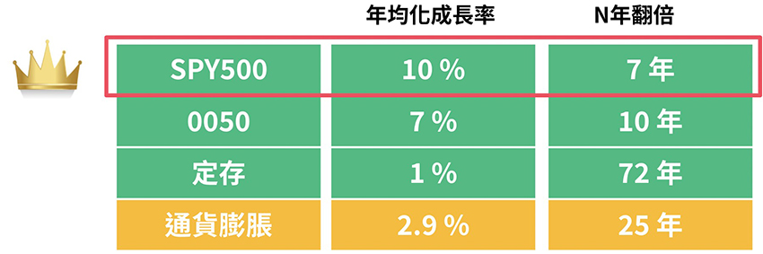
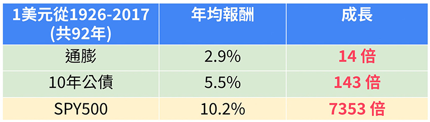
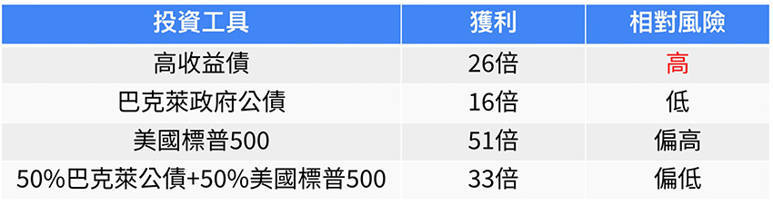
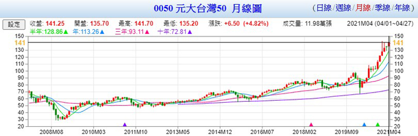
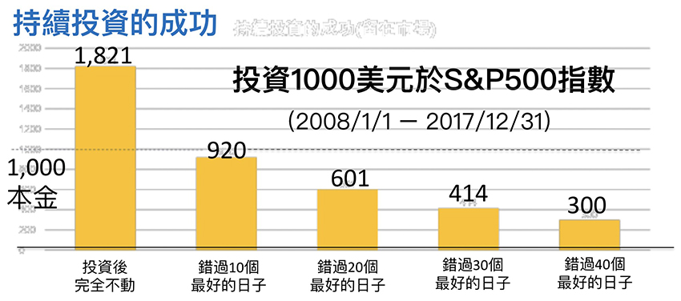
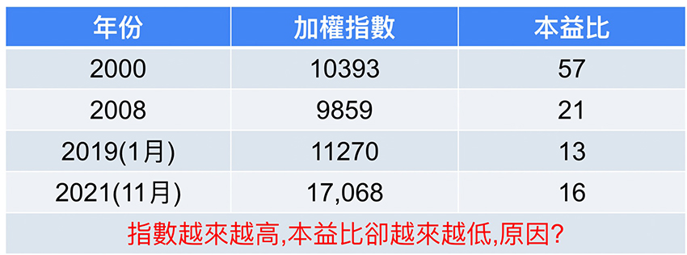

|
| ||
作者介紹：
闕又上，出身於台灣的台東大叔，現為華爾街的基金操盤手，曾在2014年因為績效連續6年打敗標普500(S&P 500)被路透社採訪，「無名小子如何擊敗華爾街」（How a little-known stock picker beat WallStreet）為標題率先報導，在台灣創立又上財經學院，推廣正確的理財知識，並呼籲民眾賺到錢後，形成善循環，回饋於社會照顧弱勢團體。
必要了解的基礎知識
ETF：英文全名為 (Exchange Traded Funds)，中文稱為「指數股票型基金」 ,先鋒基金的創辦人約翰柏格，受到了諾貝爾獎經濟學家保羅薩繆森的啟發，此諾貝爾經濟學論文研究結論為，主動式基金歷史以來無法有80%擊敗股票指數大盤(整體的股票市場表現)。進而創造了第一個ETF，S&P 500 ，被動的追蹤美國交易所市值前500大的企業，試圖模擬整個股票市場的表現，來獲得一樣投資報酬。台灣最具代表性的就是0050，(元大台灣50)其追蹤台灣前50大的市值公司，每半年汰弱換強。
401(K)：401(k)退休福利計劃，是美國於1981年創立一種延後課稅的退休金帳戶計劃，美國政府將相關規定明訂在國稅法第401(k)條中，故簡稱為401(k)計劃，而401(k)可以自行選擇個人的退休金帳戶，要購買什麼金融商品來增值自己的退休金，所以大多數的美國公民會選擇S&P 500讓自己的退休金參與美國的經濟成長，而不是放在定存與公債。
S&P 500 年化報酬率約10%，美國公債約4~5%，0050約7%，台灣定存約1%。
為什麼我們的退休金只有別人的一半
綜合作者的論點，有兩個主要的原因，第一個是我們個人的理財教育出了問題，第二個是政府制度比不上歐美等先進國家，不懂善用ETF等金融工具來規劃長期投資，而第二點範圍太大，且非一朝一夕可以改變我會透過下面幾個重點台灣理財常常犯的投資迷思，糾正觀念，翻轉退休人生。
迷思一：定存比股票安全嗎？
在台灣一般民眾認為定存是最安全的投資工具，雖然利息不高(1%)，但是至少保本，不會有虧損的風險，但是大家沒有考慮到通貨膨脹會讓你手上的現金越來越小，試想想小時候你吃的牛肉麵是不是可以買到新台幣100元有找的，現在可能找不太到100塊以內牛肉麵，你可能只能吃到牛肉湯麵。所以定存是短期很安全，長期你的錢只會越存越小，可以說長期來說最危險的投資金融工具。
|  |
迷思二：公債比股票安全嗎？
在美國公債市場比股票市場還大，是相當成熟的金融商品，台灣民眾通常對公債不熟悉，這邊先稍微著墨一下，公債就是政府或企業公開發行法律有效的借款憑證，通常借款期間內享有穩定的配息，然後期滿後歸還本金，是一個可以對抗通膨的投資工具，但是常常受到利率波動而價格受其影響，我們用歷史數據來看公債，從1926年到2014年如果你投資1美元到美國公債，你會得到143美元，但如果你放S&P 500會有7353美元，兩者相差51倍多，所以公債是短中期的投資工具，若你需要資金的成長還是得需要把錢放在有成長性的股市上。
|  |
迷思三：『高收益』代表好投資嗎？
通常收益來自於兩個部份，一個是利息，一個是資本利得(價差)，台灣諸多投資人都喜歡高利息，所以常常看到高配息就二話不說地把錢投資進去，所以常常去買高利息的外幣定存，或是像大家熟悉的2008年雷曼兄弟包裝次級貸款的連動債(經過包裝後的垃圾債卷)，因此所謂的高配息幾乎都是來自於高風險或是拿投資本金來配息給你，很多人說高風險必然有高報酬，但是歷史數據告訴我們，如果你投資不會破產且具市場代表性的ETF，高收益債的投資回報沒有超過S&P 500且價格的波動也不輸股票，可以說是股票與公債的優點都沒有，論投資績效還輸股票，是非常不划算的投資標的。
|  |
迷思四：避開『波動與套牢』就是安全的投資嗎？
股市會波動，是因為一間公司的市值不是恆定的，其中與他短期1-5年內未來的營運狀況和投資人的看好與看壞有極大的關係，所以波動是不可避免的，但是股市不論經過多少波動，最後都會回歸到它應有的價值，前提投資的不是個股，而是類似0050這樣的ETF(參閱下圖的0050月線圖)，每一次的波動都會再創新高，只要實體的經濟再成長，而且既然波動是無法避免的，唯有我們使用正確的態度面對它，接受它，甚至於高手還會逢低加碼，正確地處理它。
|  |
如果你因為怕套牢而不敢進場股市，下面有一個很經典的圖，統計了2008年初到2017年底，這10年期間，S&P500的投資績效，如果你錯過上漲幅度最高的10天以上，你的投資馬上就變成負報酬，而且這10天還有一半以上發生在2008年金融海嘯的時候。我知道聰明的你在想什麼，你一定想如果有能夠避開低點，然後再高點當天再買入，但是很可惜你可能辦不到，因為這幾天都是跳開漲高(也就是盤前法人交易就買高)，普通投資人根本享受不到這樣盤前的漲幅，所以你還認為你能輕易地擇時嗎？
|  |
迷思五：股市屢創新高，是崩盤前的訊號嗎？
在1990年台股創下12682過去的歷史新高時，台股本益比(衡量企業現金股價貴還是便宜的重要指標)大約60左右，這是什麼概念呢？這意味著：如果公司盈餘不再成長，相當於要經過60年才能回本，所以在當天就崩盤了下殺最低在2000多點，反彈回到4000多點，而如今台股已經18000點創新高，但是本益比落在15到16之間，這代表企業的獲益盈餘的成長可以支撐股價，所以我們不能只看股票的絕對價格，而是要看企業的獲利能不能支撐高股價。
|  |
迷思六：投資股市就像是在賭博嗎？
股市跟賭博有像的地方，短期是靠運氣，但是最大的不同是參與經濟成長的股市，長期來說是一定贏，而賭博是短期贏靠運氣，但是長期除非你有技巧性地靠能力與超越常人的記憶力，讓自己的勝率高達期望值，不然一般來說是玩越多次越賠，所以簡單來說投資股票是時間的朋友，賭博卻是時間的敵人。
導讀結論
去年底公司有邀請台灣財經界鼎鼎大名的樂活大叔，施昇輝老師來授課，沒想到不到2小時內就爆滿，所以可見同仁對理財是非常有需求的，這本書可以說是非常適合台灣人的理財經典書籍，若台灣的勞退可以自選0050，等於你的退休金有台灣一流的50間企業，在背後替你撐腰，其實投資的本質就是參與一流企業所帶來的經濟成長，那些技術分析只是短期且相對無用的工具，扭轉你的理財觀念，也可以空出雙手活出更精彩的人生，讓你不再為錢煩惱。